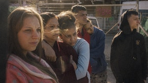

La ultima primavera
Beter dan de realiteit kun je het niet verzinnen, vindt schrijver-regisseur Isabel Lamberti. Je moet er hooguit een beetje aan schaven of het een duwtje geven, zoals ze dat doet in haar debuutfilm La última primavera. De werkelijkheid van deze ‘fictieve non-fictie’ begint in de Madrileense wijk La Cañada Real, bij de familie Gabarre Mendoza. Het gezin woont al generaties lang in zelfgebouwde huizen, in een wijk die op papier niet bestaat en die de gemeente het liefst vandaag nog wil platwalsen. Eén voor één pakken de buren hun biezen, binnenkort zijn de Mendozas aan de beurt. Terwijl de grond onder hun voeten verdwijnt richten de gezinsleden zich allemaal op iets anders: op de zoektocht naar een nieuw thuis, op een tevergeefse opknapbeurt van de omgeving, op het verzorgen van hun wonden en van elkaar. Lamberti vroeg de familie hun eigen toekomst uit te spelen en confronteerde ze zo met de wankele werkelijkheid. De realiteit kun je niet verzinnen, maar bedenken wat je met haar aan moet is een kunst.
La ultima primavera draait tijdens Leiden Internation Film Festival 2020
La ultima primavera draait tijdens Spanish Film Festival
Synopsis
Regie Isabel Lamberti Met David Gabarre Mendoza, Agustina Mendoza Gabarre, María Duro Rego, Alejandro Gabarre Mendoza Duur 77 Min. Jaar 2020 Taal SpaansIn La Cañada Real, een buitenwijk van hoofdstad Madrid, loopt de spanning op wanneer de bewoners te horen krijgen dat ze hun zelfgebouwde huizen moeten verlaten. Het land waarop ze wonen is verkocht. David, vader van het gezin en een hardwerkende schroothandelaar, wil niet bij de pakken neerzitten en zoekt naar een oplossing binnen het bureaucratische systeem. Maar zijn vrouw, de altijd vrolijke Augustina, weet zich van wanhoop geen raad en ook de jongere leden van de familie, oudste zoon David, schoondochter Maria en de jonge Alejandro (9) worstelen met besef dat binnenkort alles gaat veranderen. La última primavera is het speelfilmdebuut van de Nederlands-Spaanse filmmaker Isabel Lamberti, die eerder twee broertjes uit de Mendoza familie filmde in haar afstudeerfilm Volando Voy (2015).
Ga zo vaak naar La ultima primavera als je wil
Met de Cinevillepas ga je zo vaak als je wil naar de film voor € 21,- per maand in bioscopen en filmtheaters door heel Nederland.
Interview
‘Ik noem het gewoon fictie, dan kan het allemaal.’ Regisseur en scenarist Isabel Lamberti over La última primavera